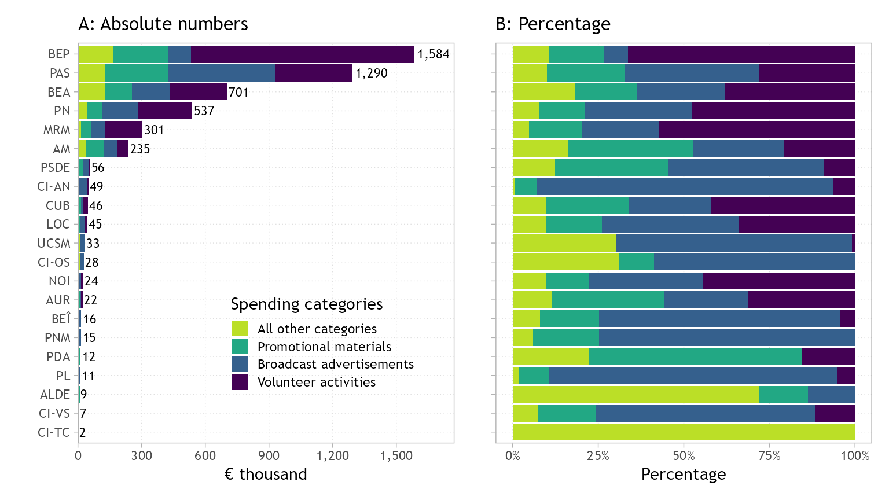
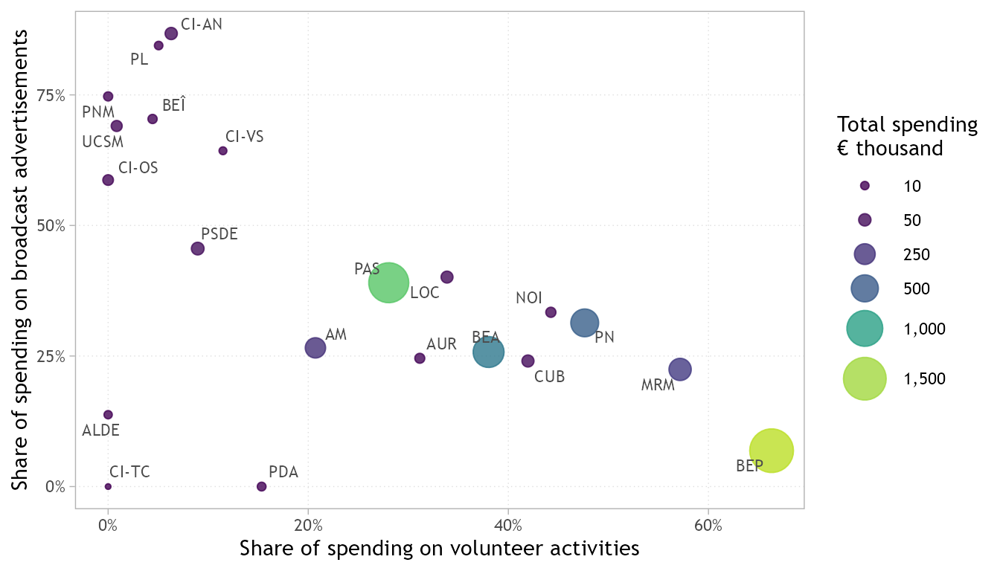

![]()
| Acronym | Electoral contestant |
|---|---|
| ALDE | Alliance of Liberals and Democrats for Europe |
| AM | Moldovans Alliance |
| AUR | Alliance for the Union of Romanians |
| BEA | Alternative Bloc |
| BEP | Patriotic Electoral Bloc |
| BEÎ | Together Bloc |
| CI-AN | Independent candidate, Andrei Năstase |
| CI-OS | Independent candidate, Olesea Stamate |
| CI-TC | Independent candidate, Tatiana Crețu |
| CI-VS | Independent candidate, Victoria Sanduța |
| CUB | Coalition for Unity and Welfare |
| LOC | League of Cities and Communes |
| MRM | Respect Moldova Movement |
| NOI | New Historical Option |
| PAS | Party of Action and Solidarity |
| PDA | Democracy at Home Party |
| PL | Liberal Party |
| PN | Our Party |
| PNM | National Moldovan Party |
| PSDE | European Social Democratic Party |
| UCSM | Christian-Social Union of Moldova |
How did Moldova’s parties spend their campaign money? Spending patterns in the 2025 elections
campaign finance
campaign spending
advertising
volunteers
elections
Moldova
This blog post looks at the spending side of Moldova’s 2025 parliamentary campaign. Using the official financial reports filed by electoral contestants, it shows how much each contestant spent, on what, and how differently well-funded and resource-poor contestants allocated their money. It is the second of a few posts based on my analysis in the Moldovan Analytical Digest.
This is the second post based on my analysis in the Moldovan Analytical Digest (Lipcean, 2026). The first post looked at how contestants raised money in Moldova’s 2025 parliamentary elections. Here I look at the other side: how much they spent, what they spent it on, and whether contestants with a lot of money spent differently from those with little. As before, the analysis uses the official financial reports that contestants filed with the Central Electoral Commission (CEC) (Comisia Electorală Centrală, 2025b), and therefore covers only declared spending. The figures cover the same 21 contestants as in the previous post.
NoteAcronyms of electoral contestants
How much did contestants spend?
The law capped each contestant’s spending at 0.1% of state budget revenues: MDL 75,932,486, or about €3.9 million (Comisia Electorală Centrală, 2025a). That is roughly MDL 28 (€1.4) per registered voter. In the 2021 elections the cap was half as large as a share of the budget (0.05%, or MDL 20,707,700 (Comisia Electorală Centrală, 2021)), so the 2025 cap was about 3.7 times higher in lei. In practice, nobody came close to it. The biggest spender, the Patriotic Electoral Bloc (BEP), used 41% of the cap, and the Party of Action and Solidarity (PAS), the party in government, 33%. Most contestants spent less than 2%.
Together, electoral competitors reported about €5.0 million in campaign spending. Given the interchangeability of income and spending totals, reported spending matches reported income almost to the euro (the largest difference is about €10), so the ranking is the same as for income. The inequality in fundraising described in the previous post is therefore also an inequality in spending. The interesting question is how contestants allocated their campaign money for different purposes to win the voters’ hearts and endorsement.
Where did the money go?
Figure 1 breaks spending down into four broad categories. Panel A ranks contestants based on spending budgets from the largest to the smallest. It also shows the distribution of spending categories in absolute numbers. Panel B displays the distribution of spending categories in percentage, which provides a more nuanced perspective on how contestants prioritised the allocation of campaign money for different purposes. To keep the figure readable, I show the three largest categories separately and lump all the others together. The three categories that dominate spending priorities include: volunteer activities (44% of all reported spending), broadcast advertisements (25%) and promotional materials (19%). Together they account for 89% of all campaign spending. The remaining categories are insignificant: in-kind goods and services account for 5%, transport for 2%, while premises, personnel and legal fees are each below 0.5%.

Volunteers
Volunteer work represents the largest spending item and is reported on both sides of the campaign budget, as income (what supporters contribute) and as spending (the value of their work, as reported by the contestant). This is also the category where the gap between electoral contestants is widest. For BEP, volunteer activities make up 66% of reported spending, and for the Respect Moldova Movement (MRM) 57%. For PAS, the party in government, it accounts for 28% of expenses. The majority of smaller contestants report little or no volunteer activity at all. We know that the ability to mobilize volunteers is a sign of relatively strong organisation.
What type of work did volunteers carry out? In the digest I used the detailed campaign reports of each contestant to show that about three quarters of volunteer activities, around 30,000 in all, consisted in handing out campaign materials in direct contact with voters. More than 6,000 worked as representatives at polling stations, and the rest helped with media, logistics and other support (Lipcean, 2026).
Broadcast advertisements and promotional materials
Broadcast advertisements are the second biggest item, and here the picture is different. PAS spent €503,710 on producing and airing commercials, 39% of its spending, more than any other contestant in euros. The other big spenders had other priorities: BEP devoted only 7% of its spending to commercials, BEA 26% and PN 31%. Among the less well-funded contestants, commercials were typically a larger share of the budget than for their wealthier counterparts. Outside the six best-funded contestants, the typical share spent on broadcast advertisements revolves around 46%, although several of them spent on broadcasting ads more than two thirds of their entire budget. Paid commercials were regarded by electoral competitors with little resources and limited organisation capacity to get campaign visibility to offset the shortage of a volunteer network.
Promotional materials, such as printed leaflets and posters, constitute the third spending category. Across the six best-funded contestants, they account for between 13% and 37% of spending, which suggests that such outlays are a routine cost for contestants with an established organisational structure.
Figure 2 displays the share of campaign spending for each of the two dominant categories – broadcasting ads and volunteer work – against each other. Each point is a contestant, located by the share of its spending for volunteer activities (horizontal axis) and to broadcast advertisements (vertical axis), while the size and colour of each point show how much the respective contestant spent in total. As the plot shows, contestants spread along a diagonal, from campaigns investing almost exclusively in advertisements (upper left) to campaigns prioritizing volunteer work (lower right). The well-funded competitors and big spenders are scattered in different places: BEP and MRM relied mostly on volunteers, PAS and BEA are in the middle, while most poorly funded contestants are located in the top left corner.

What this means for competition
Given that campaign spending represents the flip side of fundraising, it reflects the same disparities in resources: several contestants spent considerably more than most of other competitors. The top-tier spenders had more options regarding how to allocate their funds between different categories. However, as data show, they had different preferences on how to combine volunteer work, media coverage and organisation. In contrast, contestants with limited funds had a much narrower choice. Without an extensive organisation and a narrow volunteer pool, they channeled most of their money into paid commercials to increase visibility.
These resource disparities raise a critical question: do they ultimately translate into votes? I provide a tentative answer in the next post.
References
Comisia Electorală Centrală. (2021). Cu privire la stabilirea plafonului general al mijloacelor financiare ce pot fi transferate în contul „Fond electoral” al concurenților electorali la alegerile parlamentare anticipate din 11 iulie 2021. https://a.cec.md/ro/cu-privire-la-stabilirea-plafonului-general-al-mijloacelor-financiare-ce-2751_99328.html
Comisia Electorală Centrală. (2025a). Cu privire la stabilirea plafonului general al mijloacelor financiare ce pot fi transferate în contul „Fond electoral” și utilizate de concurenții electorali la alegerile parlamentare din data de 28 septembrie 2025. https://a.cec.md/ro/cu-privire-la-stabilirea-plafonului-general-al-mijloacelor-financiare-ce-2751_114256.html
Comisia Electorală Centrală. (2025b). Sistemul informatic “Control financiar”. https://finante.cec.md/reports.aspx
Lipcean, S. (2026). Campaign financing in Moldova’s 2025 parliamentary elections. Moldovan Analytical Digest, 5, 2–17. https://doi.org/10.3929/ethz-c-000793910